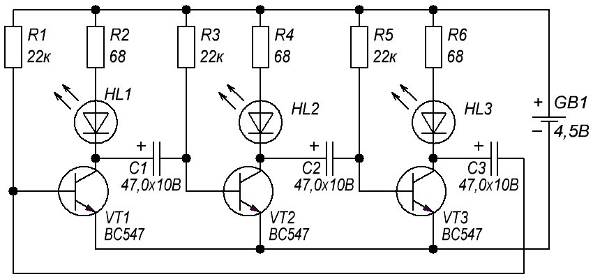

Мигалка на 3 светодиода
Простая схема трёхфазного мультивибратора (рис. 1) на трёх транзисторах при работе создает эффект бегущей дорожки из трёх источников света (светодиодов).

Рис. 1 - Схема мультивибратора на 3 светодиода
Таблица 1
| Обозначение | Наименование | Номинал | Количество | Примечание |
|---|---|---|---|---|
| C1-C3 | Конденсатор электролитический | 47 мкФ/10В | 3 | |
| HL1-HL3 | Светодиод | АЛ307БМ | 3 | |
| R1, R3, R5 | Резистор постоянный | 22 кОм | 3 | |
| R2, R4, R6 | Резистор постоянный | 68 Ом | 3 | |
| VT1-VT3 | Биполярный транзистор | BC547 | 4 | КТ315 |
Электролитические конденсаторы 47 мкФ определяют частоту мигания светодиодов, чем выше их ёмкость - тем реже происходит переключение светодиодов, при уменьшение количества мкФ светодиоды мигают чаще. Если поставить конденсаторы большой ёмкости (200 мкФ и выше), то три светодиода будут гореть постоянно.
Вместо транзисторов BC547 возможно использование других транзисторов: КТ3102, КТ315.
Резисторы на 68 Ом возможно и не использовать, они только ограничивают ток светодиода. Можно использовать синие крупные светодиоды диаметром 10 мм.
Питание для схемы около 5 В, удобно применять 3-4 батарейки или аккумулятора типоразмером AA (пальчиковые). Если подключите к схеме источник питания с напряжением больше нужного, то частота мигания уменьшится. При слишком большом напряжение светодиоды будут просто гореть. Ток потребления мультивибратора весьма мал и колеблется в рамках 50-54 мA.